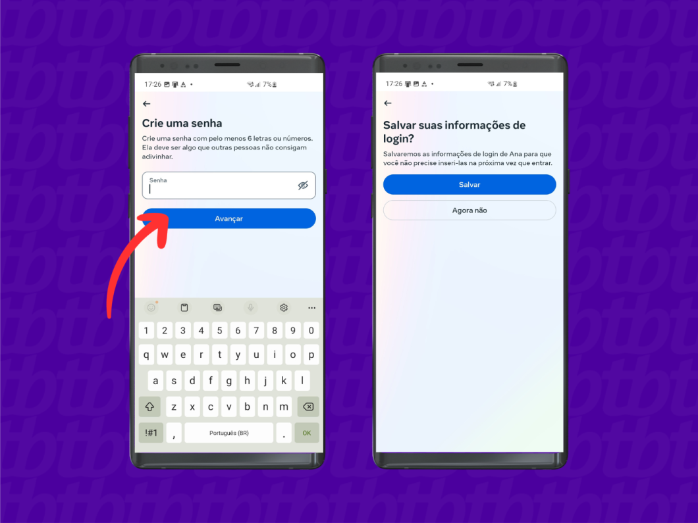
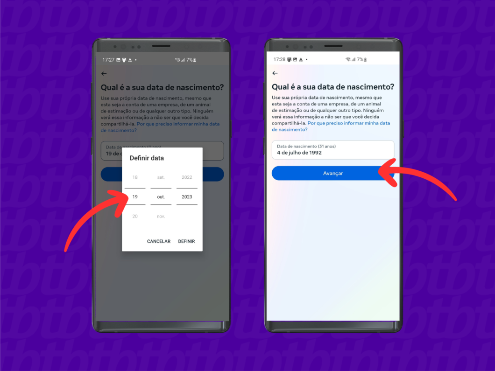
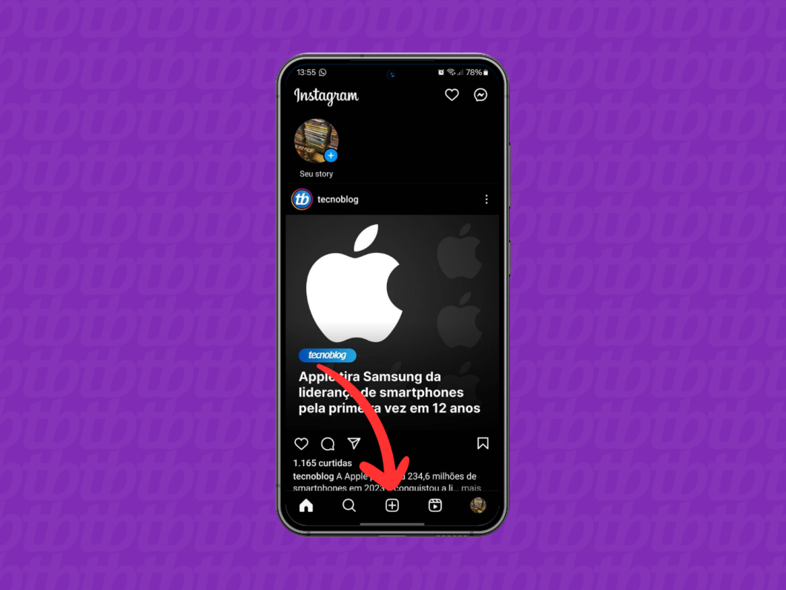
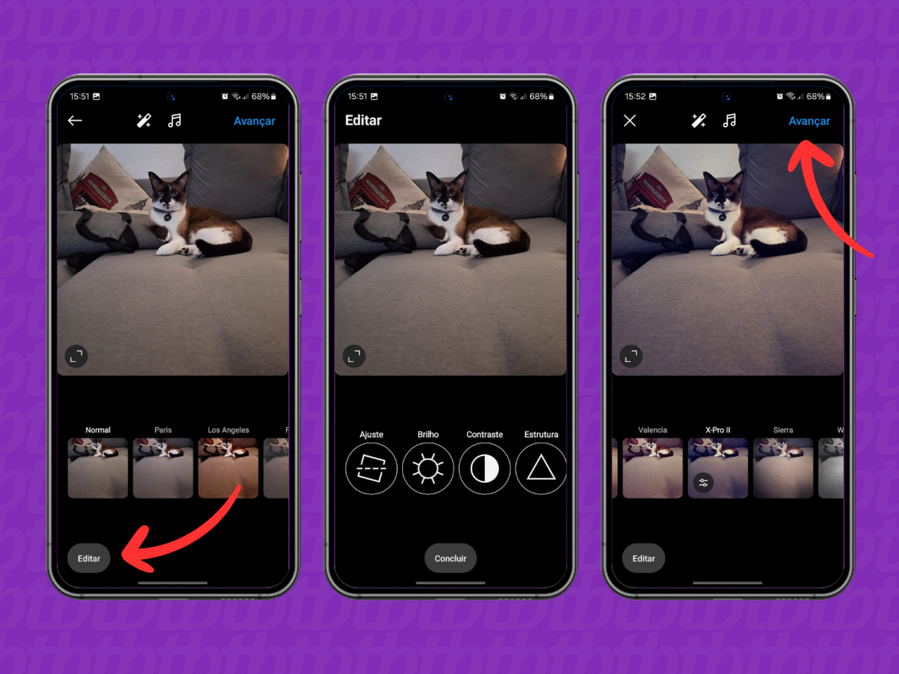
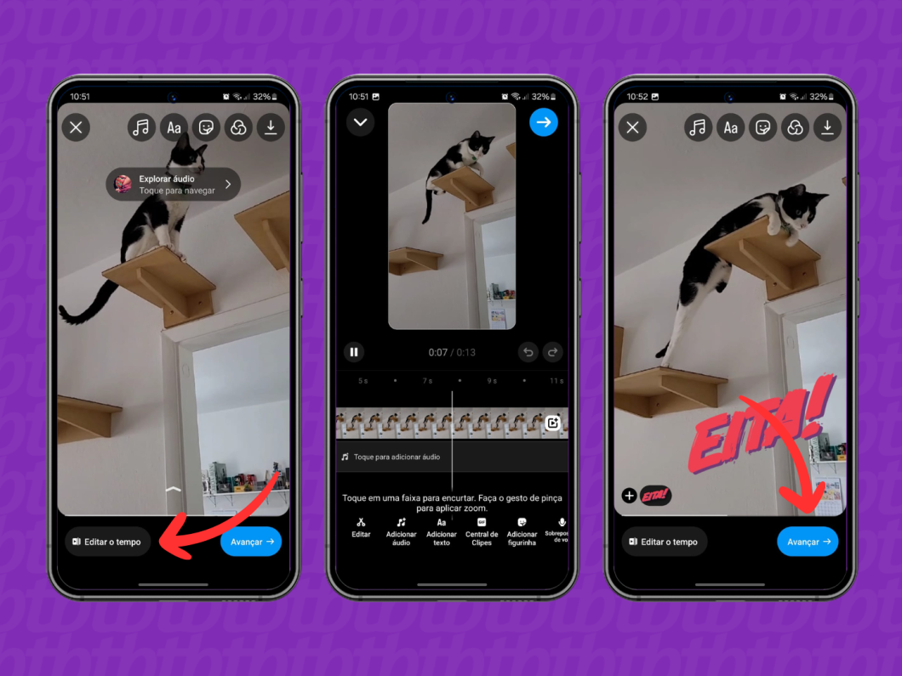
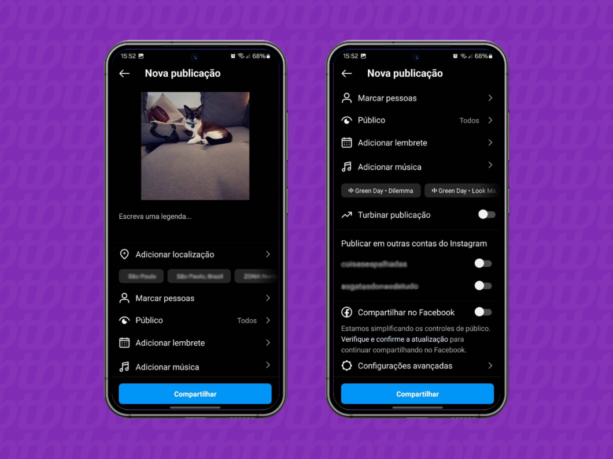
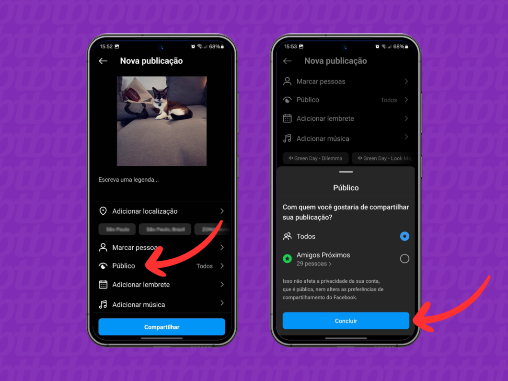
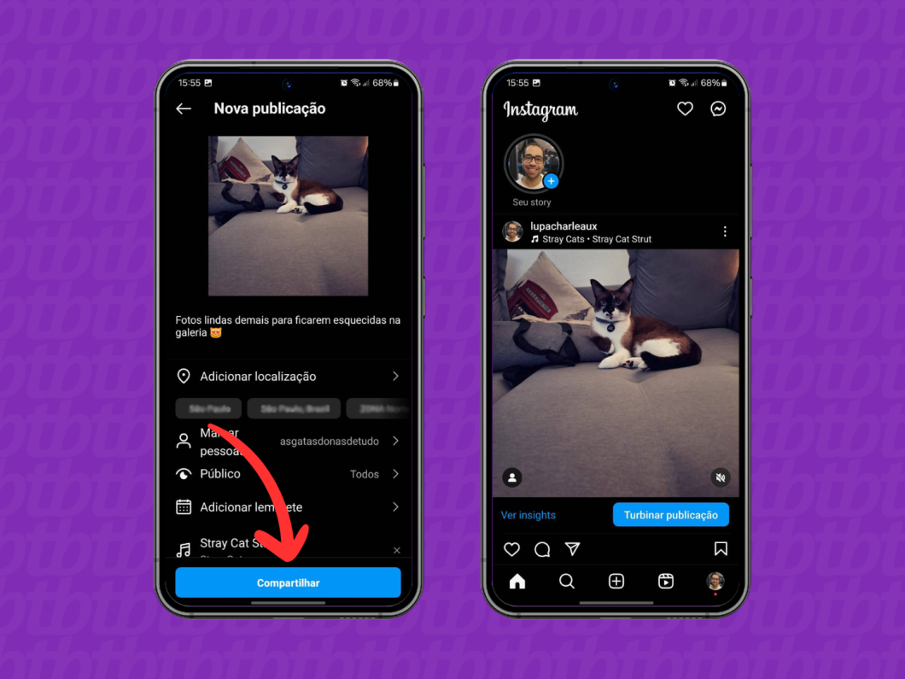

O que é o instagram
O Instagram é a quarta rede social mais popular do mundo, com cerca de 2 bilhões de usuários ativos mensalmente. A história do aplicativo começa antes da aquisição pelo Facebook, com os primeiros filtros, feed cronológico e fotos quadradas.
Neste guia, iremos explicar em detalhes a principais funções e como usá-las
| Indice |
|---|
| Como baixar instagram |
| como criar conta |
| como postar foto |
| O que é e como usar Story do instargam |
Baixando instagram
Assim como qualquer outro aplicativo no Android ou iOS, a instalação do Instagram é feita a partir da respectiva loja de apps: a App Store, no iPhone, ou a Google Play Store, no Android. Nas lojas, é possível fazer o download e, em seguida, a instalação para uso no seu smartphone ou tablet.
Nesse caso, basta apenas abrir a loja e procurar pelo Instagram. Em seguida, toque no botão de download e aguarde a instalação automática.
Criando conta no instagram
-
Baixe e abra o aplicativo do Instagram no celular
-
Toque em “Criar nova conta” para fazer o cadastro no Instagram
-
Insira seu nome para criar uma conta no Instagram
-
Crie uma senha para sua conta no Instagram
-
Insira a sua data de nascimento
-
Crie um nome de usuário (@) para o Instagram
-
Use um número de celular ou e-mail para verificar o cadastro
-
Aceite os termos de uso do Instagram
O aplicativo do Instagram está disponível para Android e iOS e você pode baixar acessando a loja de aplicativos do seu celular. Após o download, abra o Instagram para começar o cadastro.
Para fazer um Instagram do zero e evitar sincronização com outros perfis da Meta, vá até a opção “Criar nova conta”.
Seu nome e sobrenome será exibido no perfil do Instagram, mas é possível alterar essa informação posteriormente. Atenção: esse não é o nome de usuário (@) do Instagram.
Defina uma senha forte para a sua conta do Instagram usando números, letras e símbolos. Guarde a sua senha, ela será necessária para fazer login na rede social. Ao tocar em “Avançar”, você decide se deseja salvar as informações de login no dispositivo.
O Instagram pede a data de nascimento para confirmar a idade do usuário. De acordo com as diretrizes da rede social, é preciso ter no mínimo 13 anos para usar o Instagram.
Seu nome de usuário do Instagram deve ter até 30 caracteres (entre letras, números, pontos e sublinhados) e não pode conter espaços.
Você deve fornecer um e-mail ou número de celular válido para receber o código de verificação e avançar com o login no Instagram.
Antes de aceitar os termos de uso, é importante ler as informações atentamente para evitar ter uma conta suspensa no Instagram devido à violação das diretrizes da rede social
Após a leitura, caso concorde com os termos, basta aceitá-los para finalizar o cadastro e começar a usar o Instagram.
Aqui está um video para melhor comprensão
Postando foto
-
Abra o app do Instagram e toque em “+”
-
Selecione a opção “Publicação”
-
Escolha uma mídia da galeria ou use a câmera do Instagram
-
Edite a foto ou vídeo com as ferramentas do Instagram
-
Adicione legenda e marcações antes de postar no Feed
-
Defina quem pode ver sua foto ou vídeo no Feed
-
Todos: todos os seus seguidores podem ver a sua publicação na rede social. Se for um Instagram aberto, todas as pessoas não seguidores que visitarem o perfil também poderão ver o conteúdo;
-
Amigos próximos: apenas as pessoas da lista de Amigos Próximos podem ver o conteúdo publicado no Feed e na grade do perfil.
-
Toque em “Compartilhar” para postar no Feed do Instagram
Abra o app do Instagram no celular Android ou iOS e toque no ícone “+”, no centro da parte inferior da tela.
Toque na opção “Publicação” para realizar um post para o Feed do Instagram.
Toque em cima da foto ou do vídeo salvo na galeria do seu celular para publicar no Feed. Você também pode selecionar várias fotos e vídeos para criar um único post. Depois, toque em “Avançar” no canto superior direito da tela.
Outra opção é tocar no ícone de câmera, na parte direita, para usar a câmera do telefone para registrar uma imagem.
Toque no botão “Editar”, no canto inferior esquerdo, para ajustar brilho, contraste e outros detalhes da foto. Você ainda pode aplicar os filtros do Instagram e recurso Lux (ícone de bastão na parte superior da tela) para modificar a imagem. Então, toque no botão azul “Avançar”, no canto superior direito.
Os vídeos individuais viram reels quando têm duração de até 15 minutos. Você verá outras ferramentas de edição, como editar o tempo e adicionar textos, GIFs, áudio, sobreposição de voz e outros elementos. Depois, toque no botão “Avançar” no canto inferior direito.
Na seção “Nova publicação”, você pode escrever a legenda, adicionar localização e marcar alguém no Instagram antes de publicar a foto ou vídeo no Feed. Nesta área, você ainda encontra as opções para adicionar música e fazer collab no Instagram.
Toque em “Público” para escolher quais pessoas podem ver sua foto ou vídeo no Feed do Instagram:
Depois toque no botão azul “Concluir”, na parte inferior da tela.
Toque no botão azul “Compartilhar”, na parte inferior da tela, para concluir a edição e postar a foto ou o vídeo. Agora, o conteúdo será exibido no Feed dos seus seguidores no Instagram – ou para a lista Amigos Próximos, dependendo do público selecionado – e poderá ser visto na grade principal do seu perfil na rede social.
